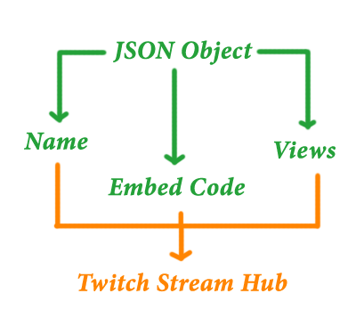

Twitch-Hub is simple twitch API scrubber for building elegant twitch viewing platforms.
First we want to make a table in our database useing the following scheme.
| Field | Type | Null | Key | Default | Extra |
|---|---|---|---|---|---|
| Id | Int (255) | No | Primary | Null | Auto_increment |
| stream_display_name | varchar (255) | No | Null | ||
| embed_code | varchar (255) | No | Null | ||
| views | int (255) | No | Null | ||
| pos | Int (255) | No | Null | ||
| time | Int (255) | No | Null |
Or just use this line of code in MySQL to create your table.
CREATE TABLE live_streams (id INT(255) NOT NULL AUTO_INCREMENT, stream_display_name VARCHAR(255) NOT NULL, embed_code VARCHAR(255) NOT NULL, views INT(255) NOT NULL, pos INT(255) NOT NULL, time INT(255) NOT NULL, PRIMARY KEY (id));
Then we make a Cronjob to run our scrubbing script every minute storing the info in a MySQL database.
* * * * * cd /var/www/html/exe && ./stream_hub_cron.php >/dev/null 2>/dev/null
Once our Cronjob is made we grab all that info from the database and encode it into a json object.

Finally we take elements from that object to and style it any way we like.
